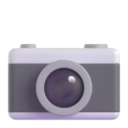

Про Thingual
Мова — це назви речей навколо тебе
Thingual — мобільний застосунок, у якому слова вивчаються від предметів: наводиш камеру на чашку — і бачиш die Tasse, la taza чи カップ, чуєш вимову і зберігаєш картку з власним фото. Thingual Web — його вебкомпаньйон: тут можна спробувати словник і тренування без встановлення.
Що вміє застосунок

Камера
Режими «Предмет», «Сцена», «Текст» і «Галерея». У браузері предмети розпізнаються на пристрої (TensorFlow.js), складніші сцени — через ШІ на сервері.

Картка слова
Артикль, романізація, транскрипція IPA, звичайна й повільна вимова, приклад речення, практика вимови з оцінкою.

Як звучить у світі
Той самий предмет шістнадцятьма мовами та фото, які зробили люди в різних країнах.

Повторення FSRS
Алгоритм інтервальних повторень, як в Anki, і сім типів вправ: від «фото → слово» до побудови речення.

Daily Drop і серії
Одне слово на день для всіх, таймер, серія днів поспіль і досягнення.

Фрази
386 фраз у 12 ситуаціях шістнадцятьма мовами, фразові дієслова й ідіоми з поясненнями українською.
Сайт і застосунок
| Можливість | Thingual Web | Застосунок |
|---|---|---|
| Розпізнавання предметів камерою | — | ✓ |
| Словник з перекладами 16 мовами | 220 слово | 1200+ слів |
| Вимова слова | голос браузера | голос + практика вимови |
| Тест рівня | ✓ (12 питань) | ✓ (фото-квіз) |
| Інтервальні повторення | система Лейтнера | FSRS |
| Daily Drop | слово дня | слово дня + фото людей світу |
| Мапа «як звучить у світі» | список мов | мапа і стрічка |
| Акаунт і синхронізація | — | анонімний профіль |
| Темна тема | ✓ | ✓ |
Як зроблено сайт
- HTML5 із семантичною розміткою: header, nav, main, section, dialog, details.
- Tailwind CSS 3, зібраний у статичний CSS; кольори й шрифти — з дизайн-системи застосунку.
- Чистий JavaScript (ES-модулі): словник завантажується з
data.jsonчерезfetch, логіка тестів — окремі чисті функції з автотестами. - Бібліотеки з CDN (jsDelivr, з перевіркою цілісності SRI): Swiper — карусель мов, canvas-confetti — святкування результату тесту.
- Vercel + GitHub Actions: кожен push у main проходить перевірки і публікується автоматично.
Чесно про обмеження
- Немає акаунтів: картки, результати тесту і тема зберігаються лише в цьому браузері (localStorage).
- Форма на сторінці «Контакти» нічого не надсилає на сервер — сервера немає. Вона перевіряє дані й готує звернення в GitHub Issues.
- Вимова залежить від голосів, встановлених у твоєму браузері чи системі.
- Тест оцінює лише словниковий запас за картинками, а не граматику чи мовлення.
- На сайті 220 слово — ті, що мають 3D-ілюстрацію; у застосунку слів більше.
Питання й відповіді
Чи потрібно реєструватися?
Ні. Сайт працює без акаунта. Прогрес зберігається у твоєму браузері; якщо очистити дані сайту, він зникне.
Як визначається рівень у тесті?
Тест адаптивний: кожна правильна відповідь піднімає складність наступного питання на один рівень CEFR, помилка — опускає. Рівнем вважається найвищий, на якому ти відповіла хоча б на два питання з точністю від 60 %.
Що таке система Лейтнера?
Картки лежать у п’яти «коробках». Нову картку повторюєш щодня; якщо знаєш — вона переходить у коробку з довшим інтервалом (1, 3, 7, 14 днів), якщо ні — повертається в першу.
Чому немає вимови для деяких мов?
Сайт використовує синтез мовлення браузера. Якщо в системі немає голосу потрібної мови, кнопка повідомить про це. У застосунку вимова працює для всіх 16 мов.
Звідки слова й переклади?
Зі словника застосунку Thingual: кожен предмет — це одне поняття з назвами 16 мовами, артиклями, романізацією та прикладами. Сайт використовує вибірку слів, для яких є ілюстрація.
Ліцензії та джерела
- 3D-ілюстрації — Fluent Emoji (Microsoft, MIT). Стокових фото на сайті немає.
- Логотип «Планета слів» — бренд застосунку Thingual; зображення Землі — NASA Blue Marble (суспільне надбання).
- Шрифти: Inter, Instrument Serif, Cormorant Garamond — SIL Open Font License, розміщені на сайті локально.
- Swiper (MIT), canvas-confetti (ISC) — через CDN jsDelivr.
- Код сайту — MIT, github.com/angelinaua15-bit/thingual-web.
- Автор: Ангеліна Іванів, група ПП-25, НУ «Львівська політехніка». Самостійна робота з дисципліни «Технології веброзробки та дизайну».